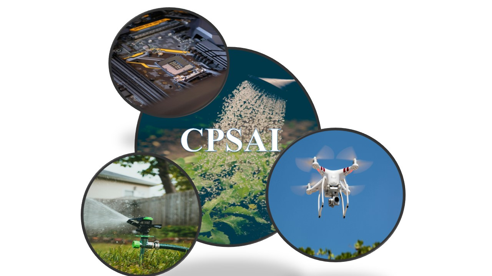
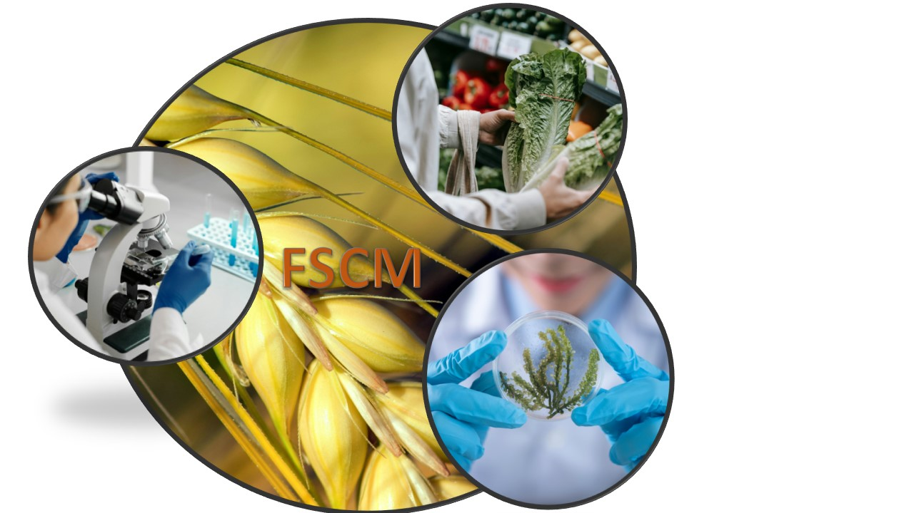
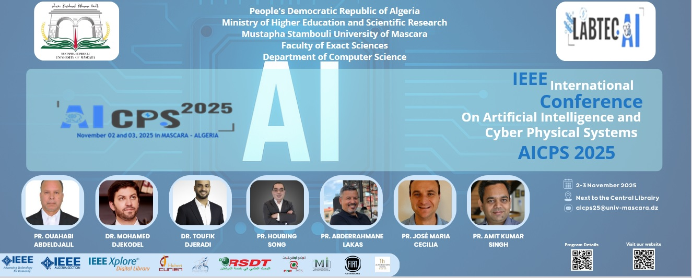
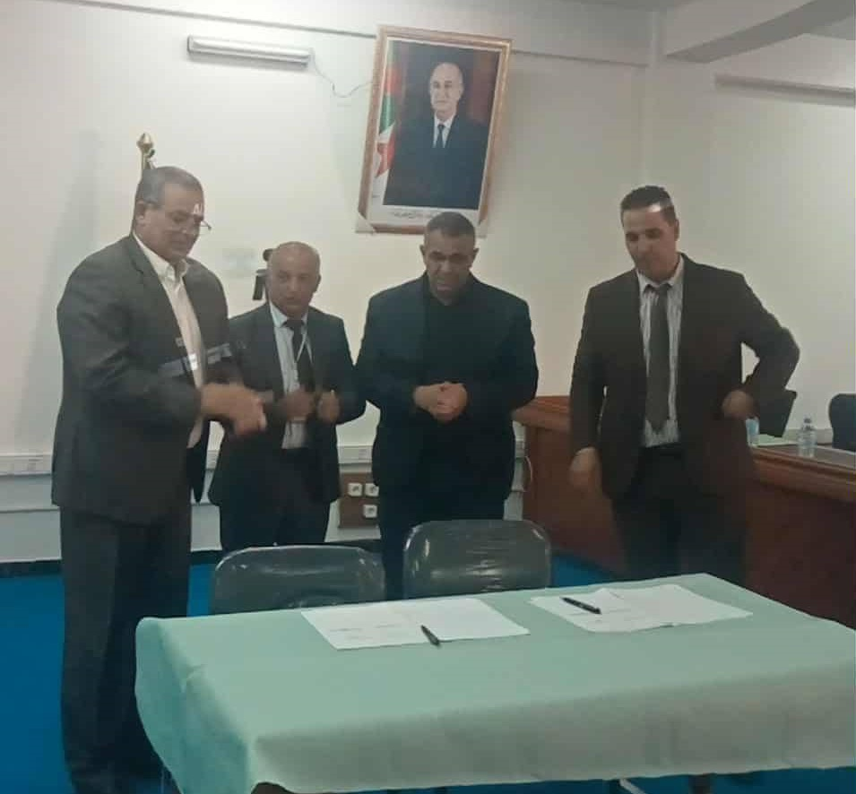
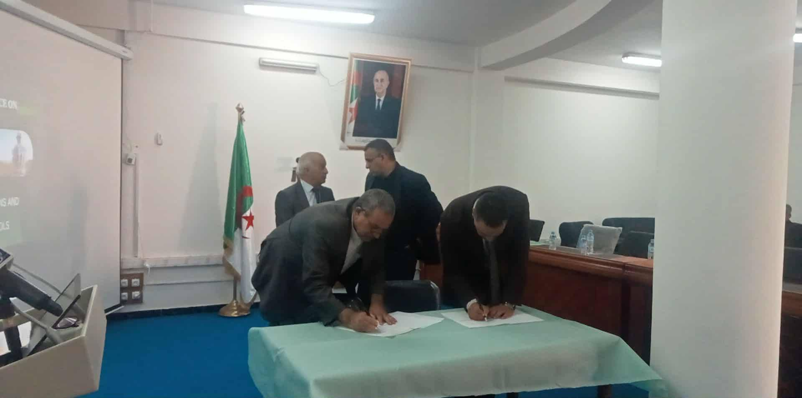
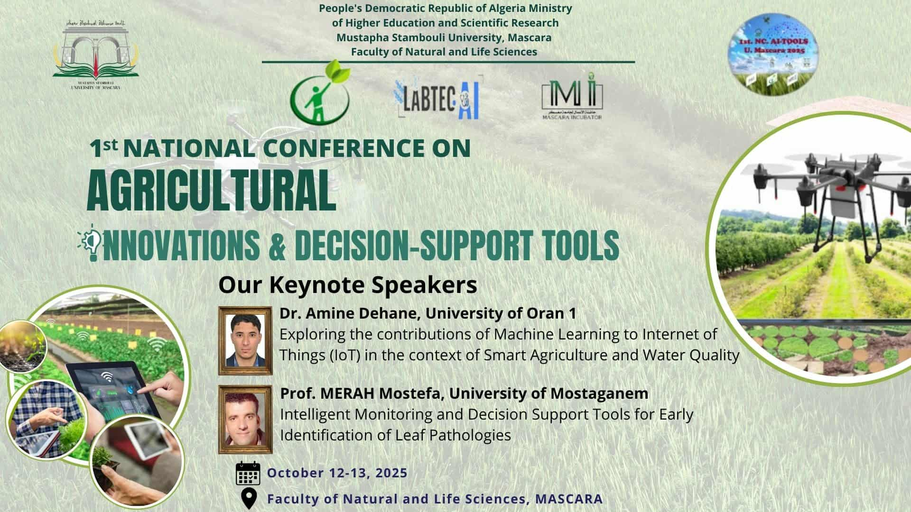
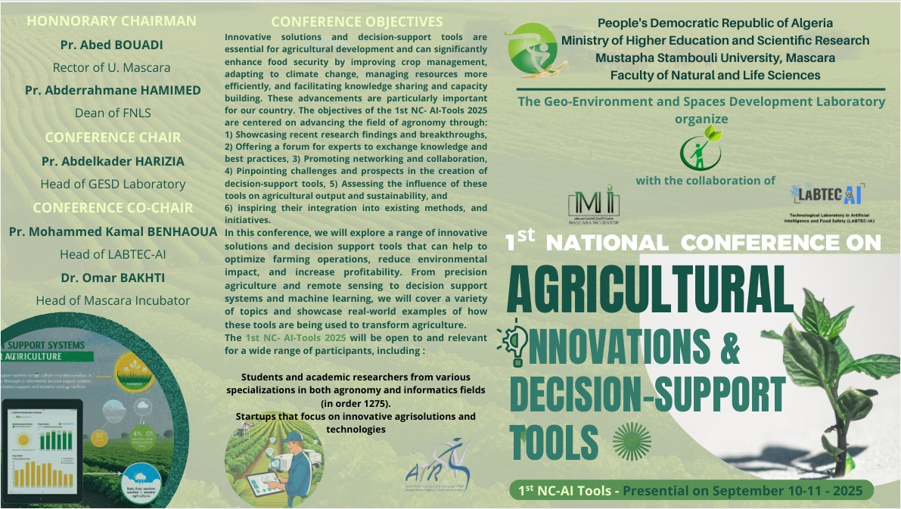
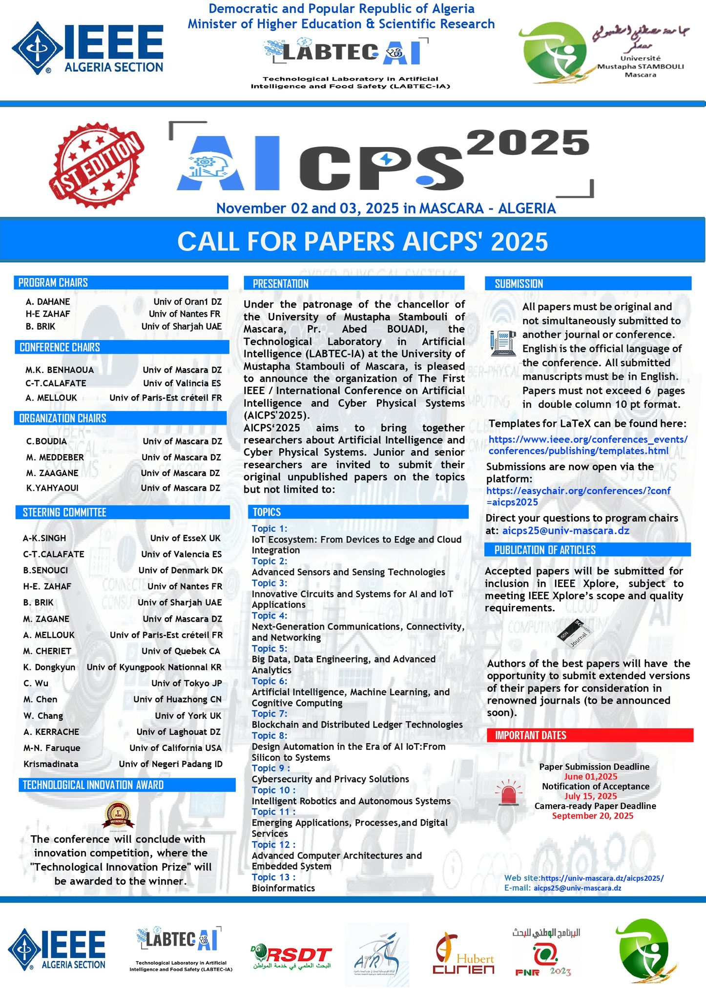
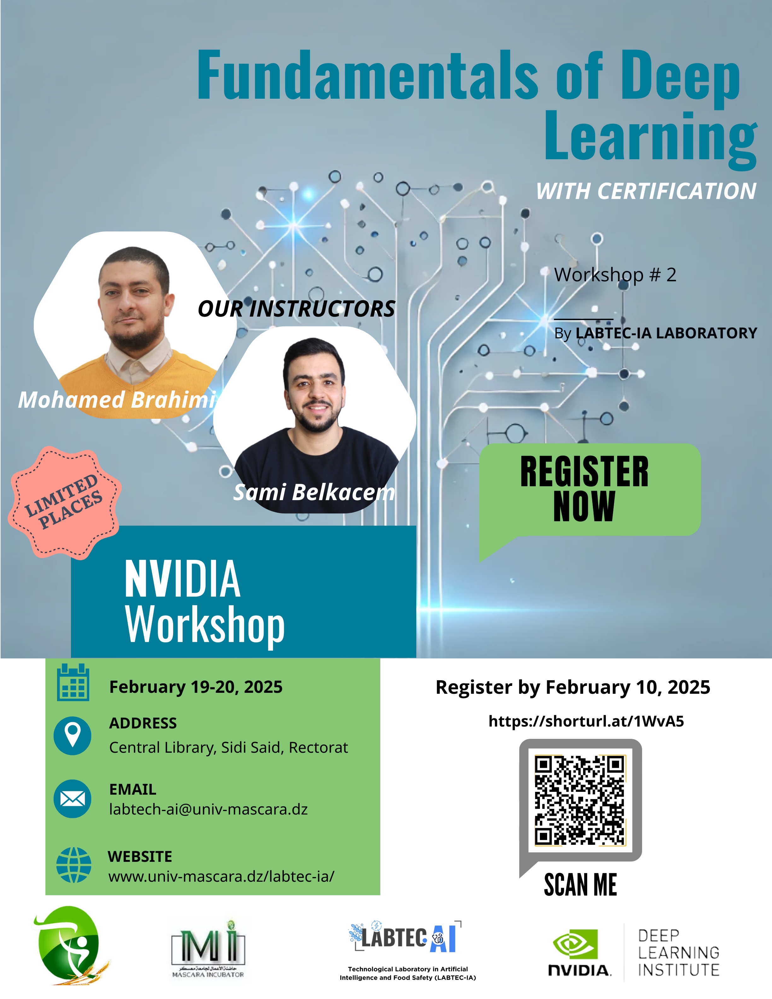
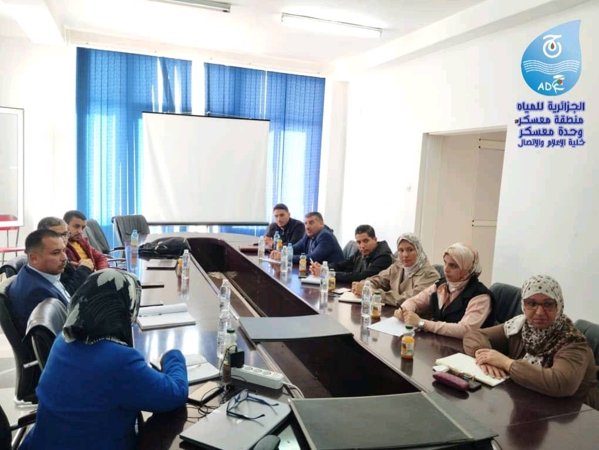

TEAMS
LABTEC-IA includes 04 teams:
Team 1 : Cyber-Physical Systems & Artificial Intelligence (CPSAI)
Team head : Pr Kamel Benhaoua

Team 3 : Food Safety and Contaminant Monitoring (FSCM)
Team head : Dr Mohammed Hadjari
Team 4 : Artificial Intelligence and Information Security (AIIS)
Team head : Dr Mohammed Zagane

Latest news
The First IEEE/International Conference on Artificial Intelligence and Cyber-Physical Systems (AICPS'25) is just around the corner — November 2–3, 2025!
Join us for two inspiring days of talks, research, and collaboration in AI and CPS. Don’t miss out
See you soon on November 2–3, 2025, at the University of Mustapha Stambouli, Mascara!

For more information about the conference program, keynote speakers, and other details, please visit the official conference website at: AICPS'25
Official Collaboration Agreement Signed Between LABTEC-AI and GESLAB
We are delighted to announce the signing of an official collaboration agreement between LABTEC-AI, affiliated with the Faculty of Exact Sciences, and GESLAB, from the Faculty of Natural and Life Sciences.
The official signing ceremony took place in the presence of the Deans of both faculties , as part of the First National Conference on Agronomical Innovations and Decision-Support Tools, jointly organized by the two laboratories.
This partnership marks an important milestone in promoting interdisciplinary collaboration between the fields of exact sciences and agronomical sciences. By combining expertise in artificial intelligence, environmental systems, and precision agriculture, LABTEC-AI and GESLAB aim to advance innovative research, address complex scientific challenges, and foster impactful knowledge exchange.
We look forward to the fruitful outcomes that will emerge from this collaboration and to strengthening our shared commitment to excellence in research and academic innovation


NC-AI-TOOLS’25 — Just a Few Days Away!
The First National Conference on Agricultural Innovations & Decision-Support Tools (NC-AI-TOOLS’25) is just around the corner!
Organized by the Geo-Environment and Spaces Development Laboratory, in collaboration with the LABTEC-IA Laboratory and the Mascara Incubator, this event will bring together experts, researchers, and practitioners to discuss the latest innovations and digital tools transforming agriculture.
Don’t miss this opportunity to exchange ideas, discover cutting-edge work, and be part of an inspiring national event!
See you soon on October 12–13, 2025, at the University of Mustapha Stambouli, Mascara!

The First National Conference on Agricultural Innovations & Decision-Support Tools
About :
The Geo-Environment and Spaces Development Laboratory, in collaboration with the LABTEC-IA Laboratory and the Mascara Incubator, is organizing the first National Conference on Agricultural Innovations & Decision-Support Tools (NC-AI-TOOLS'25).
Conference CFP:
For full details, please refer to the Call for Papers (CFP) at the following link: NC-AI-TOOLS'25 CFP

The First International Conference on Artificial Intelligence and Cyber Physical Systems AICPS'25
About :
LABTEC-IA is delighted to announce the organization of the First International Conference on Artificial Intelligence and Cyber Physical Systems (AICPS'25). AICPS'2025 aims to bring together researchers, academics, engineers, and industry professionals in the fields of Artificial Intelligence (AI) and Cyber-Physical Systems (CPS) to share groundbreaking research and explore the latest advancements.
Conference web site:
Please visit the conference web site for more information : AICPS'25 Web Site

A two-days NVIDIA workshop, including certification, will be held on Wednesday, February 19, and Thursday, February 20, 2025, at Mustapha Stambouli University in Mascara
About :
This workshop covers deep learning techniques for various computer vision tasks. Beginning with an introduction to deep learning, participants will progress to building and deploying deep learning applications for image classification and object detection. The workshop also focuses on modifying neural networks to enhance their accuracy and performance. Attendees will implement these techniques in a final project. Upon completion, participants will gain access to additional resources to develop new deep learning applications independently..
Register :
https://shorturl.at/1WvA5More information about the workshop :
Fundamentals of Deep Learning datasheetECO-GIRE Project: Follow-up session with the project's socio-economic partner
Professor Kamal Ben Houa, Director of LABTEC-IA, participated as the Research Project Manager (ECO-GIRE) in a work meeting and follow-up session with the project's socio-economic partner: ADE (Algérienne Des Eaux), This meeting was attended by officials, management, and professor-researchers who are members of the project's research team.
Highlights from the valorization day organised by LABTEC-IA and the the Thematic Research Agency in Health and Life Sciences


Workshop on : programming of real time embedded systems and advanced configuration of IoT devices

CONTACT
To contact us, please use the following information:
Phone: +213 0559077751
Email: labtec-ia@univ-mascara.dz